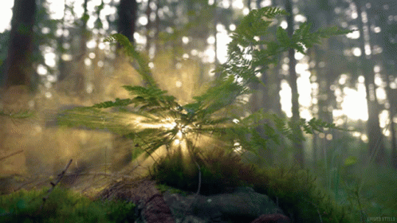

Macam-Macam Ekosistem dan Bentuknya
Ekosistem Darat
Ekosistem darat mencakup beragam lingkungan, mulai dari hutan lebat dengan pohon-pohon yang tinggi hingga gurun yang tandus dan gersang. Contoh ekosistem darat adalah hutan hujan tropis, padang rumput savana, hutan boreal, padang rumput gersang, gurun, tundra, dan pegunungan.
Ekosistem Laut
Ekosistem laut adalah rumah bagi berbagai makhluk, mulai dari ikan kecil hingga paus raksasa, yang hidup di dalam air asin yang luas dan penuh dengan kehidupan. Terumbu karang, sebagai salah satu ekosistem laut yang paling beragam dan produktif, menyediakan tempat tinggal untuk ribuan spesies ikan dan organisme laut lainnya.

Ekosistem Buatan
Ekosistem buatan adalah suatu sistem ekologis yang dibuat oleh manusia untuk meniru atau mensimulasikan kondisi alam atau ekosistem alami tertentu. Ekosistem buatan sering digunakan untuk tujuan penelitian, pendidikan, atau kepentingan praktis lainnya. Contoh dari ekosistem buatan dapat berupa akuarium, vivarium, taman botani, dan kolam renang ekologi.

Pengaruh Manusia Pada Ekosistem
"Pengaruh manusia pada ekosistem adalah dampak yang signifikan terhadap lingkungan alam. Ini mencakup deforestasi, pencemaran, perubahan iklim, overexploitasi sumber daya, hilangnya habitat, spesies invasif, perubahan penggunaan lahan, ketidakseimbangan rantai makanan, penggunaan pestisida, dan penghancuran zona pesisir.
Pengaruh manusia pada ekosistem sering kali memiliki konsekuensi negatif terhadap keanekaragaman hayati, keseimbangan ekologis, dan kualitas lingkungan secara keseluruhan. Oleh karena itu, penting untuk mengadopsi praktik yang berkelanjutan dan melakukan upaya konservasi untuk melindungi ekosistem alami dan menjaga keseimbangan dalam interaksi manusia dengan lingkungan."